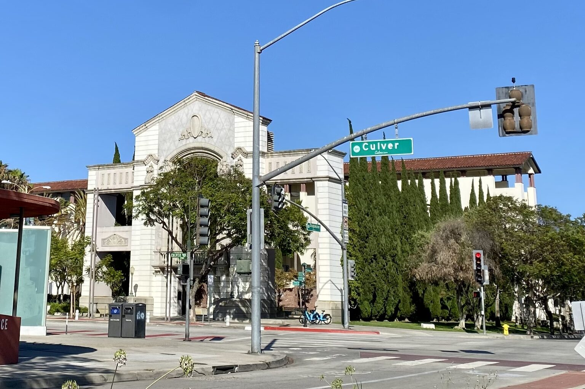

Hospice Care in Culver City Maintaining Continuity During Relocation
Eternal Life Hospice provides compassionate, visit-based hospice support for residents of Culver City. We recognize that continuity of care is vital, especially if you are considering a change of residence during your time with us. Contact us at 805.953.7273 to verify service logistics and ensure your hospice care plan transitions smoothly.
Hospice Care in Culver City at a Glance
Continuity of care depends on coordination during any home address change. Please contact us at 805.953.7273 to confirm service availability for your specific location, as our visit-based hospice model requires confirmation of travel logistics.
Ensuring Consistent Support in Culver City
For families in Culver City, the stability of care is a primary concern. Whether you are planning a move within the Westside or considering a transition to a different living environment, maintaining continuity in your hospice support requires early planning. Our team works to ensure that the transition between locations is as smooth as possible, provided the new address remains within our service area.
Because our services are based on the patient's physical location, any change in address must be coordinated with our clinical team in advance. By providing notice, we can adjust our scheduling and visit plans, ensuring that your loved one continues to receive the comfort-focused care they need without unnecessary interruptions. Your peace of mind is our priority as you navigate these changes.
If you are evaluating support in neighboring communities, you may find it helpful to review details for Santa Monica or Beverly Hills, which are part of our broader service region in Los Angeles County.
Explore hospice care in Santa Monica, Beverly Hills, Inglewood and Hawthorne. Or explore hospice care across our full service area.
Planning for Transitions and Stability
When planning to move during your time with hospice in Culver City, begin by discussing your intentions with our team at least two weeks in advance. Continuity of care depends on our ability to adjust our visit schedules for your new location. Ensure that your new residence can accommodate the necessary care and that you have a clear plan for the transfer of any essential medical supplies.
Prepare a list of your current clinical priorities and any ongoing needs that require attention during the move. Having this information documented helps us communicate with your new residence and ensures that no part of your care plan is overlooked. Always remember that any medical questions regarding treatments or medications should be directed to your primary clinician.
Finally, confirm that all necessary paperwork for the change of address is completed. Open communication with your hospice nurse is the best way to coordinate your experience. Ask yourself: Have we clearly identified the timeline for the move and have we confirmed that our hospice team can continue visits at the new address?
Hospice services for Culver City families
Hospice provides professional, visit-based care designed to prioritize comfort and quality of life. Our interdisciplinary team coordinates with patients and families to manage symptoms and provide emotional guidance. It is important to remember that hospice is a scheduled support service, not continuous 24/7 care. Services are initiated only after a formal clinical evaluation confirms eligibility and a personalized plan of care is established by our clinical professionals.
Planning for transitions can be easier with the right information. We recommend reviewing our Family Guide to understand the various aspects of hospice life. You may also find it beneficial to read about the Medicare Hospice Benefit to understand what is covered. Additionally, our guide on How to Choose a Hospice can help you evaluate how our model fits your specific needs. Explore Eternal Life Hospice services for an overview of the team.
Care settings in Culver City
Hospice Care Scope and Service Boundaries
Hospice election is a comprehensive choice focusing on comfort. It is important to note that the benefit covers services directly related to the terminal diagnosis as outlined in the individualized care plan. Some medications or services may not be included if they are deemed unrelated to the hospice goals. We encourage families to clarify these details early in the process.
Hospice is not a substitute for daily personal care, supervision or facility room and board, which are generally not covered by the Medicare benefit. While our professional team provides regular visits to manage clinical needs, family support remains essential. Please feel free to ask our team how we coordinate with other service providers you may already have in place.
Services are based on assessed patient needs. We do not provide guarantees for continuous staffing or immediate visit responses, as we operate a visit-based model. If you have questions about specific financial responsibilities or what constitutes a covered hospice service, please reach out to our team for a transparent discussion.
Guidance for Your Care Journey
Understanding the nature of hospice can help you make informed decisions about your loved one's care. We encourage you to read When Is It Time to learn about the common indicators that suggest hospice may be the right support. These resources provide a foundation for your discussions with physicians and family members.
For those preparing for the early days of care, our guide to the First 48 Hours offers practical advice on how to organize your home and what to prepare for our initial clinical visits. Additionally, our resource on Pain and Symptom Management can help you understand our approach to comfort and how we work to address the physical needs of our patients.
If you need to contact us regarding your specific care plan or a potential move, please use our professional referral form. We are here to support your questions and help you navigate the complexities of care transitions in Culver City with compassion and practical guidance.
For physicians and care professionals in Culver City
If you are planning to change your address while receiving hospice care in Culver City, please contact us immediately. Use our professional referral form to provide your new address and the date of the transition. Please do not share clinical records or gate codes in standard chat; we will verify the location's serviceability and follow up with a secure process for gathering required information.
Refer a Hospice Patient →Common questions about hospice in Culver City
Can I move to a different home during hospice?
Yes, but you must inform us well in advance. Because our hospice services are tied to your specific location, we need to verify if we can provide care at your new address and adjust our visit scheduling to maintain continuity for the patient.
What if my new address is not in your service area?
If you move outside our service region, we will assist you in transitioning your care to a new hospice provider. Continuity is important and we will work with you to ensure your care records and requirements are communicated to the new team to minimize any disruption in support.
How does the move affect my care plan?
The care plan is designed to be flexible. When you move, we review your current needs at the new location to ensure the plan remains effective. While the goals of comfort and symptom management stay the same, the practical aspects of our visit-based care will be tailored to the new environment.
Hospice Guidance for Families in Culver City
We understand that your living situation may need to change and we are committed to helping you maintain the stability of your care throughout that process. Ensuring clear communication between your family and our team is essential for a smooth transition. What is your current timeline for a potential move?